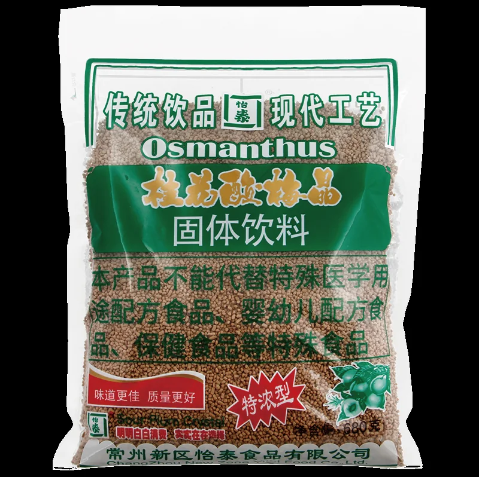
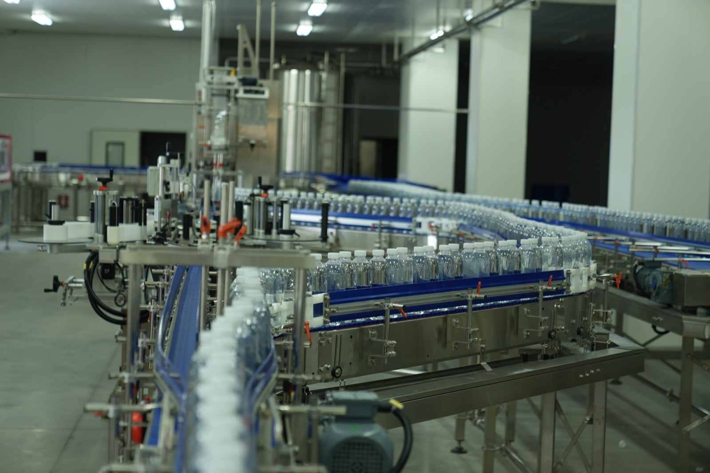
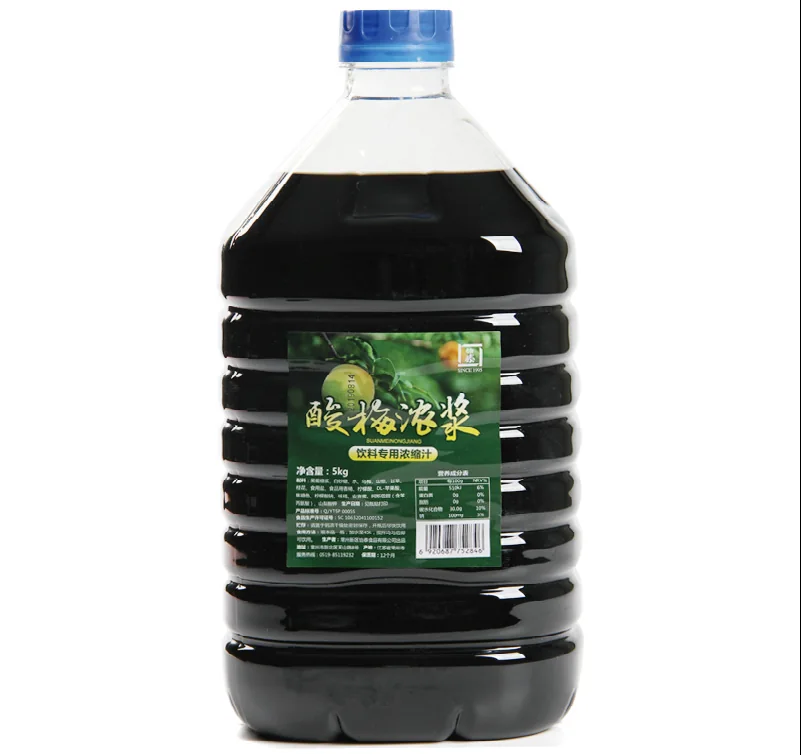
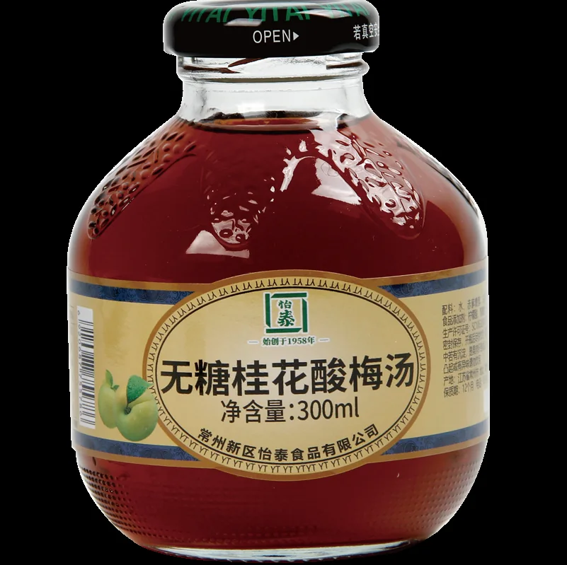
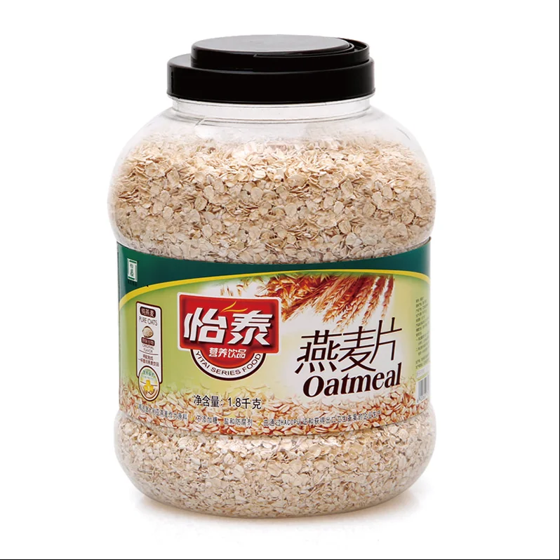
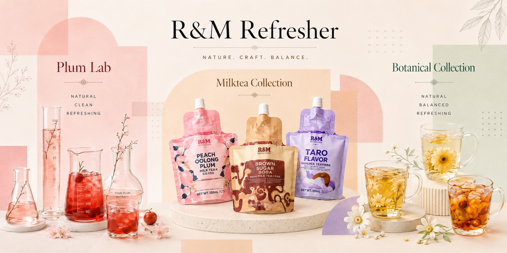

Full Range of Sour Plum Products
Sour Plum Products
Powder sour plum crystals, ready-to-drink sour plum beverages, concentrates, pastes and smoked-plum flavor syrups.
About Yitai Food
R&D and production support, including OEM/ODM
Yitai supports retail, foodservice, commercial beverage, overseas and OEM/ODM customers with product development and manufacturing.

OEM/ODM & Commercial Beverage Solutions
Yitai Food has experienced R&D and production teams that support product development, flavor adjustment, packaging recommendations, manufacturing, quality control and technical follow-up.

Powder sour plum crystals, ready-to-drink sour plum beverages, concentrates, pastes and smoked-plum flavor syrups.
Plant-based, grain, fruit-flavored and tea-format instant beverages.

Sour plum, osmanthus sour plum, smoked plum, fruit concentrates and commercial beverage bases.

Sour plum, osmanthus sour plum, sugar-free sour plum, hawthorn smoked plum and orange-peel plum drinks.

Instant oats, quick-cooking oats, blended oats and grain beverages.
Packaging

Packaging can be adapted to product type and channel needs, including PE pouches, PET bottles, glass bottles, BIB, cans and other commercial formats.
Service Capability
Develop products around plant-based beverages, concentrates, powder-form beverages and oat foods.
Optimize taste, texture, preparation ratio and application conditions.
Support stable product quality and food safety through R&D and quality monitoring.
Support questions around instant beverages, concentrates and commercial beverage applications.
Partners & Channels
Yitai Food has supported retail, foodservice, chain brands, commercial beverages and overseas markets with integrated product development, stable production and channel delivery experience.
Explore product series from the homepage or contact R&M to discuss products, channels and cooperation materials.